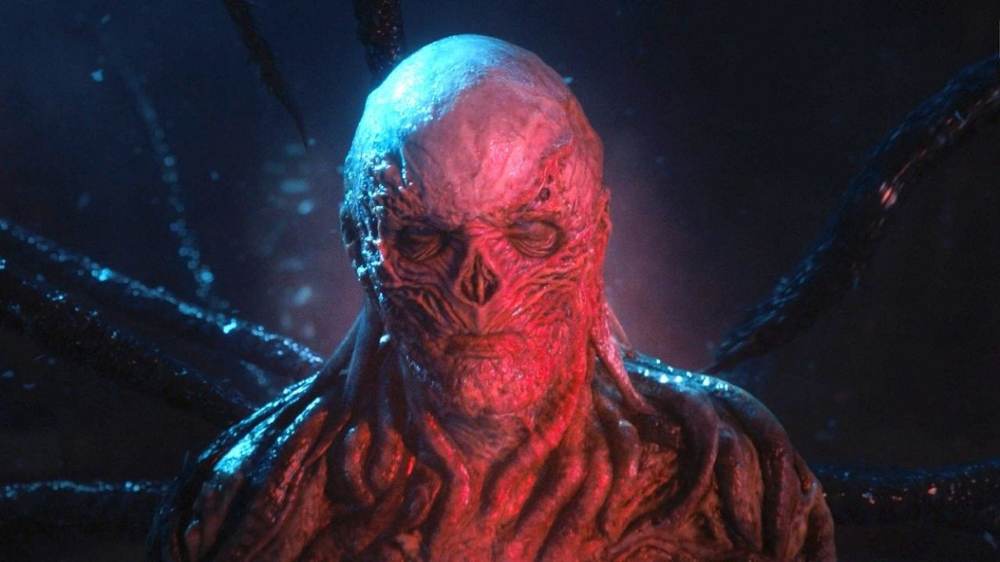
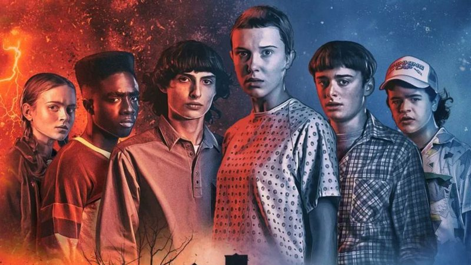

MUNDOINVERTIDO
Algumas portas
nunca deveriam ser abertas.
Existe um outro
lado de tudo.
O Mundo Invertido parece uma cópia do nosso mundo. Mas, do outro lado, criaturas horrendas, tempestades assustadoras e muita escuridão tomam conta de tudo.

O perigo não está
tão longe quanto
você imagina.
Um reino controlado por Vecna, que tem planos de trazer tudo isso ao nosso mundo. A recompensa de enfrentar o desconhecido? Salvar Hawkins.
Explore as temporadasO fim começa
em Hawkins.
Mais experientes, os heróis de Stranger Things precisam enfrentar desafios maiores do que nunca e tomar decisões que vão mudar suas vidas para sempre.
STRANGER THINGS · TEMPORADA 4 · VOLUME 2Mídia disponível na aplicação original; esta demo prioriza navegação e interação.
Trailer oficial · Netflix O confronto está chegando.
Ninguém enfrenta
isso sozinho.
Uma cidade. Dois mundos.
Uma amizade que atravessa tudo.



Sua próxima
aventura começa
aqui.
O clube de D&D mais famoso de Hawkins está com vagas abertas. Se você gosta de desafios e não tem medo de rodar o D20, chegou a hora de fazer parte da nova campanha.

Entre para o clube.
Crie sua conta e viva experiências de outro mundo.